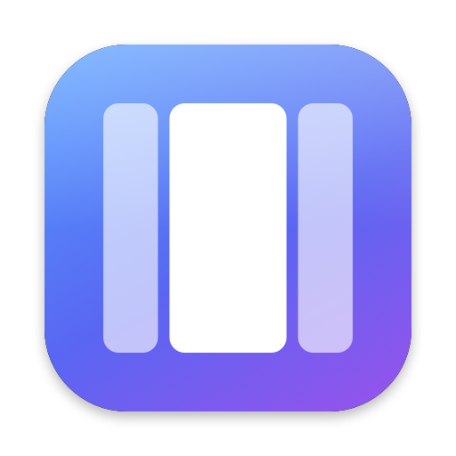
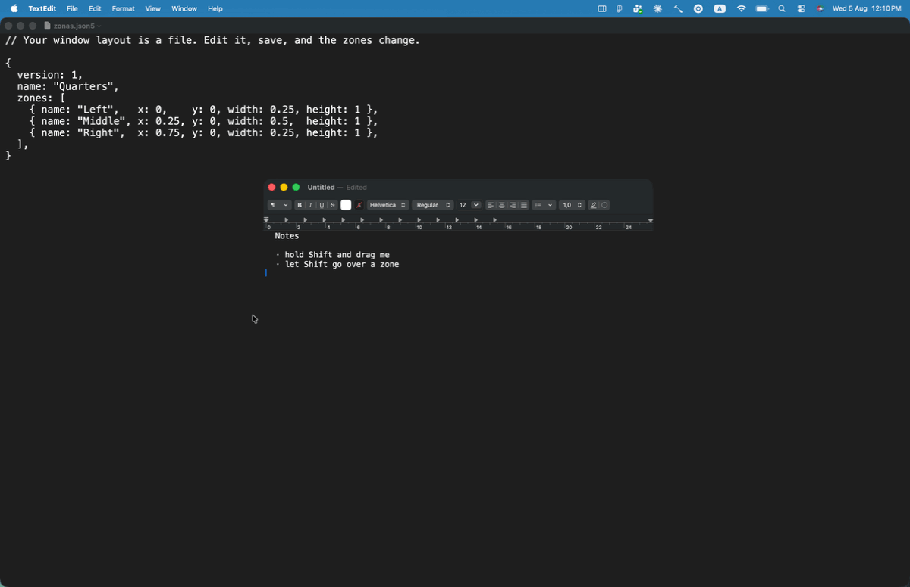

Your window layout is a file.
Snap windows into zones you define yourself — in a text file with comments in it, that lives in your dotfiles and follows you to every Mac you own.
Download Zonas
Free and open source · Signed and notarized by Apple · macOS 14+ · Apple Silicon and Intel
Source on GitHub ·
All versions and release notes

Hold Shift while dragging any window and your zones light up. Let go of Shift over the one you want and the window fills it. Hold ⌃ as well and the zones you sweep across are gathered into one, so a window can take two of them at once.
Letting go of the mouse button does not end anything, which matters on a trackpad: you can lift a finger, reposition, and take hold again without losing the gesture.
Not a preference pane, not a database in ~/Library. A file you write, with
comments that survive, ratios like "1/3" that are exact, and errors that tell
you which line to go and look at.
// ~/.config/zonas/zonas.json5 { name: "Three Columns", zones: [ { name: "Left", x: 0, y: 0, width: 0.25, height: 1 }, { name: "Center", x: 0.25, y: 0, width: 0.5, height: 1 }, { name: "Right", x: 0.75, y: 0, width: 0.25, height: 1 }, ], }
Zones are fractions of the screen, so one layout works on a laptop and on a 34-inch monitor without being redrawn. Edit the file and the zones change underneath you.
Click a zone to cut it in two, drag a divider to move everything lined up with it. It writes back into your file — comments where you left them.
Electron, Chromium and JetBrains windows included. An app that refuses to shrink is kept on screen instead of hanging off the edge.
Name an app and Zonas leaves it alone completely. zonas apps prints the
identifiers for you.
zonas check validates your file with a line number, fmt tidies it,
monitors tells you what to write in a rule.
Zonas.dmg and open it.